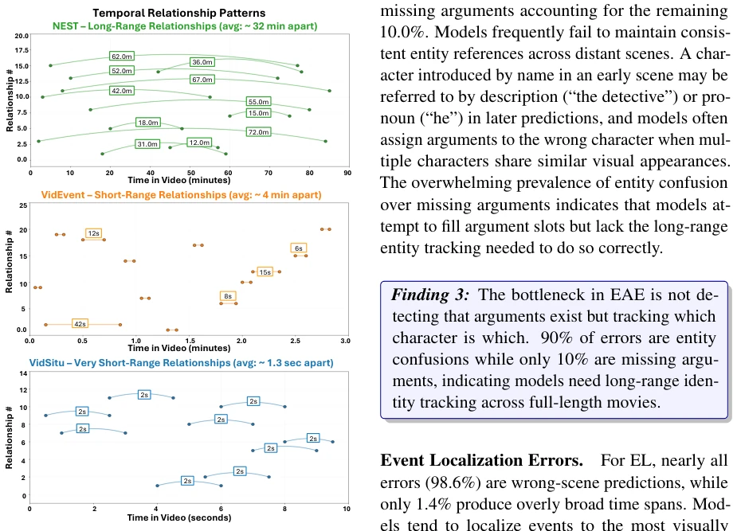
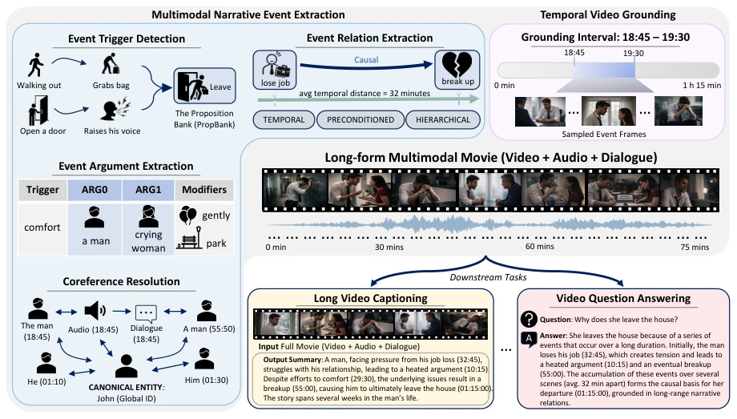
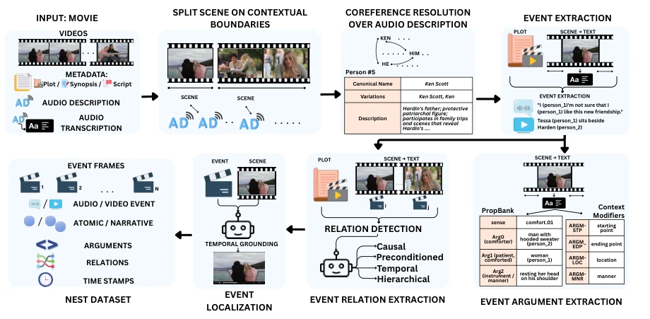
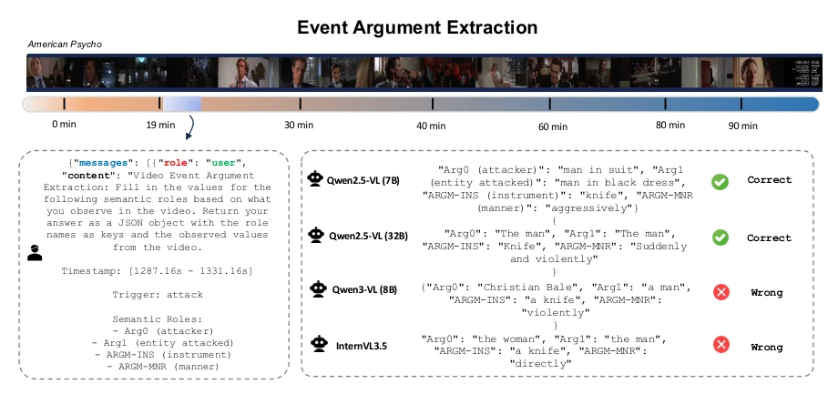
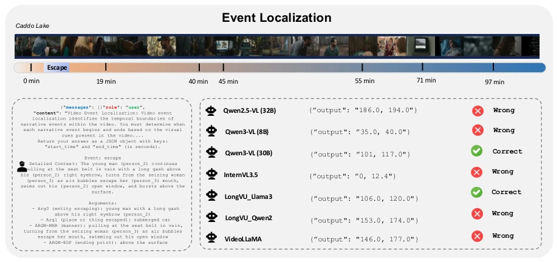
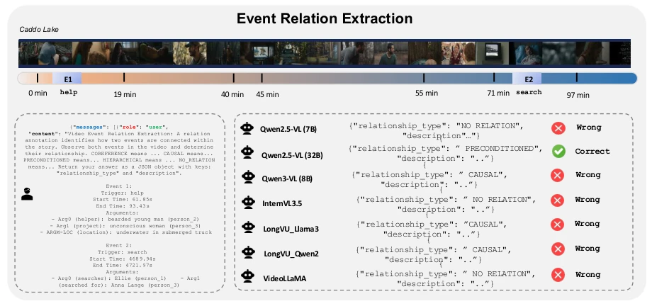
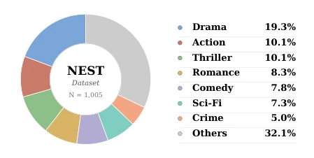
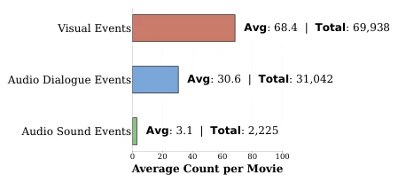
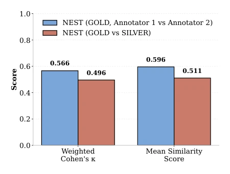
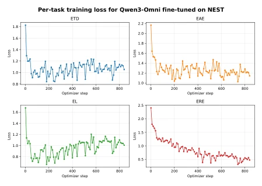

This paper finally shifts the spotlight of long video understanding from 'needle in a haystack' to 'plotline', but the results are somewhat disheartening. The NEST dataset evaluated VLM narrative understanding on 1005 full-length movies. Results showed SOTA models performed abysmally on Event Trigger Detection (ETD) and Localization (EL), with accuracy under 10%, simply being 'lost in the clouds' within the video. Although Event Relation Extraction (ERE) was slightly better, the model crashed directly when involving nonlinear time (such as flashbacks). The biggest drawback is that annotation relies on LLMs and Audio Descriptions, potentially carrying inherent bias, and due to copyright restrictions, only features can be released, not original videos, as researchers are well aware. In conclusion, this is a good benchmark, but current models are far from truly understanding movies; do not expect fine-tuning to solve all problems. This work reveals that the essential bottleneck in long video understanding lies not in context length, but in narrative abstraction capabilities. Existing long video benchmarks mostly rely on multiple-choice questions, suffering from selection bias, whereas NEST adopts open-ended structured extraction, better reflecting true understanding capabilities.
研究动机Motivation
现有长视频基准（如 CinePile, EgoSchema, LongVideoBench）多关注检索或短片段动作，缺乏对叙事结构的评估（Rawal et al., 2024; Wu et al., 2024）。模型能处理长上下文，但无法理解跨时间的因果链（如失业导致分手）。现有事件提取数据集（VidSitu, VidEvent）局限于短片段，无法捕捉长距离依赖（Sadhu et al., 2021; Liang et al., 2025）。NEST 旨在填补这一空白，评估模型在长电影中的事件发现与关系推理能力，强调视觉、对话和音频的多模态 grounding。现有工作多依赖多选择题，存在选择偏差，而 NEST 采用开放式的结构化提取，更能反映真实理解能力。
Existing long video benchmarks (e.g., CinePile, EgoSchema, LongVideoBench) mostly focus on retrieval or short-clip actions, lacking evaluation of narrative structure (Rawal et al., 2024; Wu et al., 2024). Models can handle long contexts but fail to understand causal chains across time (e.g., unemployment leading to a breakup). Existing event extraction datasets (VidSitu, VidEvent) are limited to short clips and cannot capture long-range dependencies (Sadhu et al., 2021; Liang et al., 2025). NEST aims to fill this gap by evaluating models' event discovery and relation reasoning capabilities in long movies, emphasizing multimodal grounding of visual, dialogue, and audio. Existing works mostly rely on multiple-choice questions, suffering from selection bias, whereas NEST adopts open-ended structured extraction, better reflecting true understanding capabilities.

Figure 7: Temporal distance between related events across datasets. Each arc connects a pair of related events, with arc length indicating their temporal separa- tion. NEST (top) captures long-range narrative depen- dencies averaging ∼32 minutes apart, while VidEvent (middle) and VidSitu (bottom) operate within much shorter windows (∼4 min and ∼1.3 sec, respectively).
The overall pipeline is based on movie metadata (scripts, summaries) and Audio Description (AD). First, scenes are segmented using PySceneDetect, and event triggers and arguments are extracted via LLM and OmniEvent based on PropBank specifications. Event relations (causal, temporal, etc.) are extracted via LLM. The localization task adopts scene-level boundaries rather than frame-level, as existing grounding models perform poorly on long videos. Data is divided into SILVER (LLM-assisted) and GOLD (human-annotated) sets. The core innovation lies in utilizing Audio Description as a high-quality event source, combined with multimodal grounding, to construct a structured dataset containing 102 events per movie. The GOLD set is human-annotated and used to validate the quality of the SILVER set, ensuring data reliability.

Figure 1: NEST evaluates four narrative event tasks on full-length movies: Event Trigger Detection (ETD), Event Localization (EL), Event Argument Extraction (EAE), and Event Relation Extraction (ERE). Annotations are grounded in visual content, dialogue, and audio, and linked through relations that reflect narrative structure.

Figure 3: Full-length movies with plots/scripts and audio descriptions (AD) are segmented into scenes at contextual boundaries, and we run coreference on AD to build a unified entity table. For each scene, we extract audio and visual events, recover PropBank arguments and modifiers, and link events with relations. A temporal grounding stage localizes every event to timestamps, giving specific event frames that form the NEST dataset.
实验Experiments
在 1005 部电影上测试了 7 种 SOTA 模型。指标包括 F1 和准确率。发现 ETD 低于 8%，EL 低于 6%，EAE 低于 11%，证明事件发现极难。ERE 零-shot 达 35.45%，微调后 44.42%，说明给定事件后推理尚可。Flashback 任务几乎全挂。微调主要提升 ERE，对 ETD/EL 帮助有限，表明模型缺乏长程视觉记忆。结果揭示了当前模型在长视频中的叙事抽象和时序推理能力严重不足。具体模型如 Qwen3-VL 在 ERE 上表现较好，但在 ETD 上依然低迷。
Tested 7 SOTA models on 1005 movies. Metrics included F1 and Accuracy. Found ETD below 8%, EL below 6%, EAE below 11%, proving event discovery is extremely difficult. ERE zero-shot reached 35.45%, and 44.42% after fine-tuning, indicating reasoning is acceptable given events. The Flashback task almost completely failed. Fine-tuning mainly improved ERE, with limited help for ETD/EL, indicating models lack long-range visual memory. Results reveal that current models' narrative abstraction and temporal reasoning capabilities in long videos are severely insufficient. Specific models like Qwen3-VL performed well on ERE but remained low on ETD.

Figure 4: Event Argument Extraction example from American Psycho (102 min). Given the ”attack” event trigger and four semantic roles (ARG0: attacker, ARG1: entity attacked, ARGM-INS: instrument, ARGM-MNR: manner), models extract argument values. Both Qwen2.5-VL variants (7B and 32B) correctly identify all roles, with the 7B model providing richer visual descriptions. Qwen3-VL (8B) hallucinates a celebrity name (”Christian Bale”) as the attacker, illustrating a failure mode where models inject pre-training knowledge rather than describing what is observed in the video. InternVL3.5 swaps the attacker and victim roles, identifying the correct participants but assigning them to the wrong semantic roles.

Figure 9: Event Localization example from Caddo Lake (97 min). The “escape” event occurs between approximately 19–40 minutes (green span). Given the full movie and the event description with structured arguments (left panel), seven models predict temporal boundaries. Only Qwen3-VL (30B) and LongVU-LLaMA3 correctly localize the event, while others predict timestamps far from the ground truth. Common failure modes include localizing to the wrong half of the movie (Qwen2.5-VL, LongVU-Qwen2, VideoLLaMA) and predicting the very beginning of the video (InternVL3.5), suggesting models default to salient or early scenes rather than reasoning about where the event actually occurs.

Figure 10: Event Relation Extraction example from Caddo Lake (97 min). Two events are separated by approximately 50 minutes: a “help” event (E1, near 19 min) and a “search” event (E2, near 71 min). The ground-truth relation is PRECONDITIONED, as the earlier helping event creates conditions that enable the later search. Only Qwen2.5-VL (32B) correctly identifies this relation. Three models (Qwen3-VL, LongVU-LLaMA3, LongVU-Qwen2) predict CAUSAL, confusing enablement with direct causation. Three others (Qwen2.5-VL 7B, InternVL3.5, VideoLLaMA) predict NO_RELATION entirely, failing to connect events separated by long temporal gaps. This illustrates the challenge of reasoning over distant event pairs where the narrative link requires understanding how an earlier event sets up conditions for a la
其他图片Other Figures

Figure 2: Genre distribution across the 1,005 movies in the NEST dataset.

Figure 5: Average number of annotated events per movie in the NEST dataset, broken down by visual events, audio dialogue events, and audio sound events. Bars show per-movie averages, with total counts re- ported for each modality.

Figure 6: Annotation agreement on NEST. Weighted Cohen’s κ and mean semantic similarity for GOLD–GOLD (two annotators) and GOLD–SILVER.

Figure 8: Task-specific training loss curves for Qwen3- Omni fine-tuned on NEST. ERE loss decreases steadily, consistent with the substantial improvement in ERE F1 after fine-tuning. ETD and EL losses plateau early, indi- cating that LoRA fine-tuning does not acquire the long- range narrative event induction and temporal grounding capabilities these tasks require.